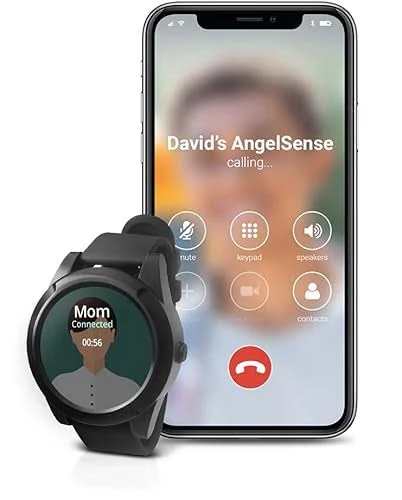
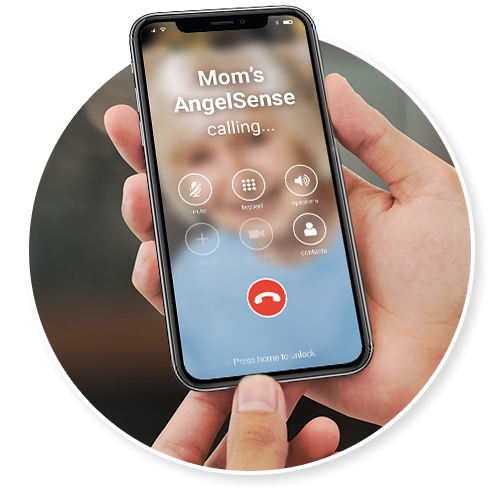
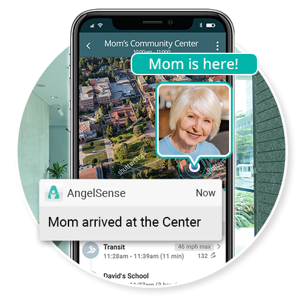

Aging Well. Today
Independent Living · Memory Health · Caring for Parents
Live GPS Location Call-In Speakerphone Off-Route Alerts
Wandering & Safety
My 84-Year-Old Mother Left to Buy Bread and Vanished for 7 Hours — Then I Found the Wrist Locator Quietly Guiding Lost Seniors Back Home
By Ellen MarshSenior Care Columnist
9 min read 189,406 reads
The call landed on my phone at 3:47 in the afternoon, on an ordinary Thursday.
A state trooper was on the line, standing in the parking lot of a Lowe’s in a town I’d never set foot in. “Ma’am, I have a Dorothy Marsh with me. Are you her daughter?”
My hand went cold around the phone. “Yes — is she alright? Where are you?”
“She’s fine, ma’am. She’s sitting in my patrol car with some water. We’re in Lynchburg. She can’t tell me how she got here. There was a card in her purse with your number on it.”
I lowered myself onto the bottom stair. Lynchburg is fifty-four miles from my mother’s front door.
That morning, a little after nine, Mom had backed her old Mercury out of the driveway to run to the Food Lion three blocks away — bread, a quart of milk, and a tin of food for Biscuit, her cat. Nothing more. The same short errand she’d been running for the better part of four decades.
Almost seven hours later, she was in a different county entirely.
The trooper said a stock clerk on his break had spotted an older woman behind the wheel of a parked sedan, engine cold, just gazing at the dashboard. She’d apparently been sitting like that for close to an hour. When he tapped on the glass and asked if she needed anything, my mother told him: “I’ve lost track of why I came.”
Late that night — after the round trip to fetch her, after I sat across from her at her kitchen table while she kept murmuring “I can’t make sense of how I got way out there”, after I finally pulled her quilt up and switched off the lamp —
I stayed in her living room in the dark and asked myself the question I’ve carried ever since:
And if there’s a next time, and no one happens to notice her?
The hardest part wasn’t the distance. It was knowing it could happen again at any moment.
I’m Ellen. I’m 53. My mother is Dorothy — Dot to everyone who loves her — and she has lived on her own in the same Roanoke house for thirty-nine years. The house I was raised in. The house where my late father framed the back porch board by board.
She has no intention of leaving it. No interest in assisted living. No interest in moving into my spare room — we attempted that for about six weeks after Dad died and it nearly wrecked the two of us.
“I have my mornings, Ellen. I have my flower beds. I have my Sunday pew. I’m not ready to be shelved away.”
And honestly — she isn’t. She still puts a hot supper on the table. Still hosts her canasta circle twice a month. Still keeps her garden. Still goes through a stack of library books every week.
But she’s 84. And after the Lynchburg afternoon, her physician handed us three letters that have reshaped our whole family since:
MCI. Mild cognitive impairment. The front porch of dementia.
Lynchburg wasn’t the first warning. Only the one impossible to ignore.
The Number No One Warns You About When Your Parents Get Older
After that day, I went home and started digging.
What I turned up frightened me badly.
The Alzheimer’s Association reports that roughly 6 in 10 people living with dementia will wander at some point — and a great many will do it more than once. It can happen at any stage, even the early one, when the person still seems perfectly fine to the people around them.
What the data actually says
If a wandering senior isn’t found within 24 hours, as many as half suffer serious harm.
Not from the dementia itself — from exposure, dehydration, a fall on unfamiliar ground, traffic, or simply getting too cold, too hot, or too far gone to reach in time. The Alzheimer’s Association calls it “critical wandering,” and every year tens of thousands of older Americans become missing-person reports this way.
My mother got lucky in Lynchburg. A clerk happened to look twice. The trooper was patient. The card with my number had survived years in the bottom of her handbag.
That night it hit me like a stone:
Mom came home on a string of coincidences. A stranger glancing at a parked car. An officer choosing to phone instead of driving her straight to an ER. A laminated card still legible after all this time.
A run of luck is not a plan.
The notification I’d have given anything to receive seven hours sooner.
I Tried Every Idea I Had. Almost None of It Held Up.
First came the scheduled phone calls.
I rang Mom every morning at nine and again at seven each evening. My brother Greg covered the weekends. We had a routine.
The flaw? Lynchburg happened in the gap between two calls. She drove off around 9:15 — minutes after we’d said goodbye — and I had no idea anything was wrong until the trooper rang at quarter to four. Almost seven blind hours.
Phone calls aren’t a tracking system. They’re a guilt-relief system. They soothe us. They don’t protect her.
Next, phone location sharing.
I bought her a smartphone (her old flip phone couldn’t be tracked) and walked her through location sharing, added myself, taught her to keep it topped up.
It worked beautifully — right up until she left it on the counter. Twice the first week. Then a third time. “Ellen, the thing is too bulky for my pocketbook. I can’t haul it everywhere I go.”
And here’s the catch no one mentions: a phone tracker only helps if your loved one remembers the phone. Memory loss is the very reason you need tracking. It’s also the very reason the phone gets left on the counter.
Then, a smartwatch.
This one nearly worked. I bought her a smartwatch, paid the extra $12 a month for cellular, and taught her to wear it.
Three problems showed up inside a month:
One: The battery barely cleared 18 hours. She had to charge it nightly. She kept forgetting.
Two: She couldn’t work it. “Ellen, the screen’s a blur and the buttons are like grains of rice. I keep ringing Marge from canasta by accident.”
Three: It was never built for someone with memory loss. It was built for tech-savvy adults who want step counts. No alert when she ended up somewhere strange. No way for me to reach her when she was lost — she had to manage to call me.
$399 sat dead in a kitchen drawer, right beside the panic pendant Greg had bought her years before.
Then, the medical alert pendant.
I gave it another go. A different company this time. $48 a month, $576 a year, locked into a two-year contract.
She wore it for nine days.
By the start of the second week, she’d “forgotten” to clip it back on after her shower.
“Ellen, it makes me feel watched. Like a patient. I’m not a patient — I’m your mother. I won’t wear a blinking button around my neck that tells every guest I’m one bad day from the nursing home.”
That’s when a hard truth landed on me — one I think most grown children miss:
Pride is a genuine safety hazard.
Our parents spent their whole adult lives being capable — raising us, holding jobs, paying off houses. The idea of becoming someone who must be monitored and alarmed feels degrading to them. So the pendant comes off. It lands in a drawer. And then they wander.
Every gadget we tried ended up in the same drawer, untouched.
I was running low on ideas. Low on patience with my own racing mind. Low on reasons to believe Mom could keep living on her own.
And that last one frightened me more than the rest. Because I knew what being told to leave her house would do to her. It would hollow her out.
Then my sister-in-law Joan said something over Sunday dinner.
One Sentence From My Sister-in-Law Changed the Whole Picture
Joan is a hospice nurse. She has seen it all. When she talks about keeping the elderly safe, I shut up and listen.
We were out on the porch after the plates were cleared. I was unloading about Mom — the Lynchburg disappearance, the abandoned pendant, the smartphone on the counter, the dead smartwatch in the drawer.
She thought for a moment. Then she said:
“Ellen, the families on my caseload stopped using those old pendants years ago. There’s a whole different kind of device now — made from the ground up for people with memory loss.”
I sat forward.
“It’s a small thing you wear on the wrist, or clip inside the clothing. Live GPS, all day, every day — you can see exactly where she is from your own phone whenever you want. The instant she drifts off a familiar route or turns up somewhere new, you get pinged. Not seven hours later.”
She paused.
“And here’s the part that matters most for someone like Dot…”
“You can ring the device like a phone, and it answers on its own — she doesn’t press a single thing. So if she’s rattled, lost, frightened, you don’t wait for her to figure out how to call. You call, and you’re right there talking to her, through her wrist.”
Something in my chest loosened for the first time in months.
“What’s it called?”
“SafeTrace,” she said. “Look it up tonight. I’ve pointed eleven families toward it when a parent started slipping. Every one of them tells me the same thing — they finally sleep.”
Joan, my sister-in-law, said the one sentence I needed to hear.
What I Read That Night Had Me Ordering It Before Bed
I sat at my kitchen table with a glass of wine and read about SafeTrace for the better part of three hours.
It was born when a father with a son on the autism spectrum, prone to wandering, couldn’t find anything on the market that did what he needed — so he built it himself. Today that same technology protects tens of thousands of families: children with autism, adults with Down syndrome, and seniors living with dementia.
It was the only consumer GPS device I could find that was genuinely designed for people with cognitive decline — not runners, not commuters, not gym regulars who strap it on as a side feature.

The SafeTrace locator and the app the whole family shares.
Here’s what it actually does, in plain terms:
Live GPS, around the clock. Open the app and you see exactly where she is on a map, refreshing every few seconds. Not “last seen two hours ago.” Right now.
An auto-answering, two-way speakerphone. This is the feature that won me over. You call the device from your phone and it picks up by itself — she doesn’t touch anything. You speak, she hears you through a clear speaker, she answers back. If she’s confused or lost, you’re in her ear within seconds.
Smart off-route alerts. The system learns her ordinary patterns — the path to the store, to church, to her canasta friend Eunice’s place. The moment she goes somewhere new, lingers too long, or takes a wrong turn, your phone buzzes right away. You don’t have to be staring at the app.
Update (): SafeTrace is currently running a free-device promotion for qualifying families. Availability is limited — we suggest checking the official site directly.
Why SafeTrace Beat Everything Else We’d Tried
Made for Memory Loss, Not Borrowed From a Fitness Watch
A smartwatch is a step counter that can also dial 911. SafeTrace is a wandering-prevention device first, last, and always — every feature shaped for someone who may not remember how to use it.
You Call HER — She Doesn’t Have to Call You
Every other device makes the wearer press a button for help. That’s exactly backwards for memory loss. SafeTrace flips it: you ring, it answers itself, you’re talking to her in seconds.
Alerts the Moment She Leaves a Familiar Place
No refreshing the app all day. It learns her routines — the store, canasta Tuesdays, Sunday service. Stray off course and my phone buzzes within minutes, not hours.
Tracks Indoors, Not Just Outside
Walk into a pharmacy and most trackers go dark. SafeTrace uses Wi-Fi positioning to keep finding her inside — the doctor’s office, the senior center, her own bedroom.
The Whole Family Can Be Guardians
My brother Greg, my daughter Hailey, and I all get the same alerts. Whoever’s closest or awake responds. The weight doesn’t land on one set of shoulders.
Watch or Clip-On — Whatever She’ll Actually Wear
Some seniors will wear a watch; some won’t. SafeTrace comes as a tidy clip-on that hides under clothing or as a watch. The maker reports a 95%+ daily wear rate — unheard of in this category.
Support Staffed by Real Caregivers
It sounds like a slogan until you phone them. Their support people have loved ones using SafeTrace too — you’re talking to someone who has lived it, not a script on the far side of the world.
Set Up by You — She Learns Nothing
You handle everything from your own phone. You hand her a watch and say, “This is so I can check on you and call you.” That’s the whole conversation. No app, no password, no button to remember.
What the First Month With Mom Wearing It Looked Like
W1
She Actually Kept It On
This sounds minor. It is not. The panic pendant hit a 100% non-wear rate inside two weeks. The smartwatch got there in four. SafeTrace had a 100% wear rate from the first morning.
When I asked her about it after a week, she said: “Ellen, it’s a watch. I’ve worn one every day since 1961. This one’s just more useful.” That was the entire discussion.
W2
The First Real Save
Mom drove to canasta on a Tuesday — the same twelve-minute trip she’d made for eleven years. Forty minutes after she left, my phone lit up: “Dorothy is at an unrecognized location.”
I opened the app. She was parked at the curb of a street she’d never been on, two blocks past Eunice’s house. I called through the watch. It answered on its own. I heard her breathing.
“Mom? It’s Ellen. You took a wrong turn near Eunice’s. Can you read me the street sign?” She did. I talked her around the block and stayed on the line the four minutes it took to reach Eunice’s driveway. Eunice came out to the car. I heard them hug through the watch.
W3
Something I Didn’t See Coming Happened to Me
I started sleeping through the night. For nearly two years — since Lynchburg — I’d jolted awake at 3 a.m. with a knot in my chest, groping for my phone to check whether Mom had called.
By the third week I’d slept until 6:15 without once reaching for it. My husband Ray noticed before I did. “You’ve been quieter at night,” he said. “I didn’t want to mention it in case I jinxed it.” Only then did I realize how much I’d been carrying.

The first time I called her through the watch, she answered before she even knew how.
Don’t Wait for the Next Lynchburg
I let nearly two years pass between Mom’s first small slip and the day she ended up in another county. I kept telling myself there was time. If you’re reading this, please don’t repeat my mistake. SafeTrace is the only consumer GPS device I’ve found that was truly built for someone with memory loss — and the only one I’d trust with my mother’s life.
Update (): SafeTrace is shipping nationwide with a free-device promotion for qualifying families. Stock and pricing can shift — check the official site for current availability.
What Other Grown Children Are Saying
“He slipped out before dawn. We reached him in under an hour.”
My father has early Alzheimer’s and lives with my mom. One night he dressed himself and walked out the front door before sunrise. By the time she woke, he’d been gone for hours. Without SafeTrace we’d have called police and waited. Instead we opened the app, saw him sitting on a bench outside an all-night gas station two miles off, called him through the watch, and my son drove over. Confused but unhurt. I can’t price what that night could have been.
— Frank D., 58, Mobile, AL Verified Buyer
“Finally, something Mom won’t take off.”
We tried a pendant twice. Mom (79) refused it within days each time — said it embarrassed her in front of company. She wears the SafeTrace clip-on tucked in her waistband and forgets it’s even there. Four months straight now. The day she got turned around at the shopping center, I called through it and walked her to the food court where my husband met her. She told me I was her guardian angel. I nearly came apart.
— Gloria S., 56, Dayton, OH Verified Buyer
“Now the whole family carries it together.”
I’m the main caregiver for my mother, but I have three siblings spread across different states. Before SafeTrace, I was the only one who ever got the panic call from a neighbor. Now we’re all guardians on the app. My brother in Denver handled the last alert because he happened to be looking at his phone first. The load went from one person to four. That alone probably saved my marriage.
— Anita P., 50, Sacramento, CA Verified Buyer
“The first time I called her through the watch, I broke down.”
I’m an only child and my mother lives two states away. The first time I called the SafeTrace and heard her say “Hello?” without having to know how to answer — I sat in my car in a parking lot and cried for ten minutes. I’d carried the fear of not being able to reach her for two years. It lifted in a single call.
— Denise W., 52, Hartford, CT Verified Buyer
Why Most Grown Children Have Never Heard of It
It’s a fair question, and the answer is uncomfortable but simple:
The big pendant brands pour an estimated $40 million a year into television advertising. Their spots run during daytime news, talk shows, and game shows — the programming that reaches anxious seniors and their grown children. They own a loud voice in the market because they have a large monthly-subscription business to protect.
SafeTrace began as one father’s project to keep his autistic son safe. It spread by word of mouth in caregiving circles — autism groups, dementia forums, hospice nurses. You hear about it from your sister-in-law the nurse, or a friend whose mother just got lost, or an article like this one.
The medical-alert pendant industry pulled in over $8.2 billion in subscription revenue last year. A device that actually solves wandering — instead of only watching for falls — is a direct threat to that business.
Read that again: the device built for today’s dementia reality is rarely the one being advertised on TV.
How SafeTrace Stacks Up Against What You’ve Probably Already Tried
SafeTrace
Smartwatch
Alert Pendant
Phone Locator
Built for memory loss
Yes — from scratch
Fitness device
Falls only
Generic
You can call HER, auto-answer
Yes
She must accept
No
No
Off-route / unfamiliar-place alerts
Automatic
Manual fence only
No
Manual setup
Indoor location tracking
Wi-Fi based
Limited
No
Limited
Multiple family guardians
Built in
Family sharing
One contact
Family sharing
Actually worn by users with memory loss
95%+ wear rate
Often abandoned
Frequently refused
Phone left behind
Support staff are caregivers
Yes
No
Call center
None
Ready to Stop Worrying?
Live GPS — see where she is any time, on any phone
Auto-answer speakerphone — call her, hear her in seconds
Smart off-route alerts — instant ping when she leaves familiar places
Indoor tracking — works inside buildings, not just outdoors
Multiple guardians — the whole family can respond, not just you
Watch or clip-on — she chooses what she’ll actually wear
Built for memory loss — not adapted from a fitness watch
Editor’s Note (): Since this piece first ran, reader response has been overwhelming. SafeTrace currently offers a free-device promotion for qualifying families. Pricing and availability can change — check the official site for current details.
Currently available as of:
My Mom Left Me a Voice Message Last Tuesday
It came through the SafeTrace app. She’d worked out the button entirely on her own — not for an emergency, just to try it.
The recording ran fourteen seconds. “Ellen, it’s your mother. I’m at Eunice’s. We’re having sandwiches. I love you. Bye now.”
I was in a meeting. I read the alert, played the message, and stepped into the hallway for a minute and a half.
That little clip is everything I’ve wanted for two years.
Not the absence of my mother getting confused — I can’t stop that. Memory loss happens. Eighty-four-year-old minds do eighty-four-year-old things.
What I wanted was the certainty that if she got lost, I would know. Right away. Not seven hours later when a stranger happened to glance into a parked car.
I think about everything I tried first — the calls, the smartphone, the rejected pendant, the dead smartwatch, the $1,650 Greg handed a pendant company for a service Mom wouldn’t wear. I think about Lynchburg. I think about all the parents and grandparents who weren’t spotted by a kind clerk on a break.
And I think about every grown child I know — my brother, my friends, my coworkers, everyone I’ve had a quiet kitchen-table talk with about an aging parent — sitting right where I sat two years ago.
If you’re reading this, and your mother or father lives alone with even the earliest signs of memory loss, and you keep telling yourself “there’s still time”:
There may not be.
I waited nearly two years. We almost didn’t get her back. Don’t wait.

These four words on a map are the reason I sleep now.
SafeTrace at a Glance
The short version
SafeTrace is a live-GPS device built specifically for seniors with memory loss — pairing continuous location, smart off-route alerts, and an auto-answer two-way speakerphone in a discreet wearable the whole family can watch from anywhere.
Live GPS tracking
Auto-answer speakerphone
Smart off-route alerts
Indoor Wi-Fi tracking
Multiple family guardians
Watch or clip-on
Who it’s for: seniors living on their own with early or progressing memory loss — and the grown children who lie awake worrying about them.
My dad slipped away from a family wedding last fall and was missing nearly two hours before we found him. He had no idea where he was. I read this article twice and ordered SafeTrace the same evening. Wish I’d had it back then.
96Reply3d
EM
Ellen MarshAuthor
Brenda — I’m so sorry about your father. Those hours of not knowing are the part nobody talks about. I’m glad you ordered one.
41Reply3d
CM
Carl M.Retired paramedic
Thirty years on the trucks. The number of “found wandering” calls I ran on elderly folks who’d been gone for hours — you wouldn’t believe it. Most weren’t located by police; they were spotted by strangers who happened to notice. A device that alerts the family within minutes of a wrong turn would have changed dozens of outcomes I saw with my own eyes. Good to see this finally within reach.
181Reply4d
TR
Tony R.
Question: my mother won’t wear a watch. Does the clip-on really stay hidden? Worried she’ll find it and pull it off.
33Reply5d
SK
Sandra K.
Tony — we use the clip-on for my father. It tucks into the waistband of his trousers. Six months and he’s never once noticed it. Hope that helps.
47Reply4d
RV
Rosa V.
I cancelled the medical alert subscription this morning. Three years, almost $1,650, and Mom hadn’t worn the pendant for two of them. Switching to SafeTrace. Wish I’d done it sooner. Thank you for writing this.
143Reply6d
WH
Walter H.
I’m 73 and in the early stages myself. I bought one for me before my kids could pester me into something I’d hate. The fact that they can call me through it — and I don’t have to do a thing — is what made me say yes. I keep my independence, they keep their sanity. Good product.
129Reply1w
KB
Keith B.
My father-in-law has early dementia and has wandered three times in the past year. We’ve been on SafeTrace four months. It’s alerted us twice — both times we had him home inside twenty minutes, and one of those would have been hours otherwise. Every grown child of an aging parent should know this exists.
118Reply1w
DW
Denise W.
Ellen — this piece made me cry. My mom is 84 and lives two states away. I’ve been losing sleep over exactly this. Thank you for putting into words what so many of us feel. Ordering one tonight.
101Reply1w
EM
Ellen MarshAuthor
Denise — thank you for sharing. We’re all in this together. Give your mom a hug from me.